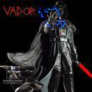
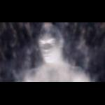

Forums galactiques > Assemblée Galactique : diplomatie officielle > La Pierre de Lumen
| Grabeuh Respect diplomatique : 1675  02/08 ETU 00:48  | Score : 5 Détails Un Carrier Protoss s'approche de la planète où a lieu la bataille pour cet artefat tant convoité qu'est la Pierre de Lumen.
Il vient de recevoir des données cryptés en niveau de sécurité 2 contenant les coordonnées d'une planète où soit disant est gardée la Pierre de Lumen. Zeratul et Tassadar en personne avaient parlé de cet objet, une ancienne formation cristaline semblable aux cristaux utilisés par les Xel-Nagas pour créer les Protoss et les Zerg. Le vaisseau se pose et les probes commencent à exploiter les ressources locales. Ils créent un Nexus, quelques Pylons, montent un camp de base et font venir quelques troupes à travers les Gateways installés. Une fois un bon nombre d'unités de combats opérationnelles, Grabeuh arrive par la porte de Warp et prend le commandement de ses troupes. "En Tar O Adun, Zealots ! Notre première mission est de prendre contact avec les commandants déja sur place, puis de nous infiltrer dans le sous-sol et de prendre possession de la formation cristalineseument cristaline nommée Pierre de Lumen." Il active son invisibilité de Dark Templar et commencer à faire avancer ses troupes, suivies par deux Arbiters, au cas où des renforts seraient nécessaires. L'équipe d'expédition rencontre en chemin une étrange créature endormie, ressemblant à un Zerg, mais dont la carapace diffère : celle ci est noire, et la seule pensée qui s'échappe du cerveau de cet être est "Mort, Mort, Mort" Un coup de lame Psionique dans la nuque et cette bestiole meurt sur le coup. Un point lumineux s'allume sur sa carapace. "Zigourmette di non di dïou ! Il avait une balisesque balise ! Fuyons vite, nous ne sommes pas en nombre suffisant pour mettre à mal une troupe complète de ces êtres. Nous devons trouver des renforts sur place, avant d'avoir à faire appel à nos Arbiters. Leur énergie est limiteusement limitée, aussi loin d'Aïur... Nous ne pouvons même pas profiter de leurs bouclier d'invisibilité !" Ils partent alors en direction d'un lieu d'où une lumière rougeâtre s'échappe : des flammes, rougeoyantes, sont au milieu d'une gigantesque bataille : une femme ailée aidée de ses hommes font face à des dizaines de monstres noirs. "Grabeuh et ses hommes arrivent Madame ! Nous sommes là !" En entendant ceci, Cassandra regarde au loin d'où vient la voix, et perd sa concentration quelques instants. Le monstre qu'elle était en train de combattre la met violemment au sol et lui fat perdre son arme. L'air se met alors à se déformer devant elle, et elle voit la tête de la bête voler en l'air, se séparant du reste du corps. Une énorme gerbe de sang vert vient s'écraser à côté, et permet de deviner la forme du jeune Protoss, toujours invisible. "Grabeuh : Excusez moi, madame, j'ai rompue votre concentrationnesque concentration... J'en suis navré, je vous ai fait risquer votre vie pour rien. Cassandra : C'est pas grave, mais gaffe à toi ! Grabeuh : Que dites vous ? Cassandra : Baisse toi ! Tout de suite ! Grabeuh : Ce n'est pas une façon de parler à la personne qui veint de vous sauver la vie... Cassandra : Baisse toi ! Bon, tu l'auras voulu ! NE TE BAISSES SURTOUT PAS ! " Cassandra s'empare de son arme, qui était tombée au sol et embroche un des monstres qui était sur le point de tuer Grabeuh. "Cassandra : Vous feriez bien de vous laver, votre invisibilité ne vous sert à rien, dans l'êtat où vous êtes... On vous verrait même en pleine nuit ! Grabeuh : Effectivement, j'ai l'air bien visiblement visible. Il est dommage pour moi de ne plus pouvoir profiter de cet avantage tactique indéniablement indéniable, mais je ferai sans..." Il s'élance alors et découpe les bras de deux monstres, il saute sur le dos du premier, lui coupe la tête, profite de son élan et rebomdit pour atterrir sur le dos du second. Il plante sa lame psionique dans la nuque de son adversaire et tranche le dos du monstre du haut vers le bas. L'ennemi s'écroule. "J'espère qu'ils m'ont vu, ça aurait été bête de faire autant de cinématique cinéma pour au final, avoir retrouvé mon intégralement intrégrale invisibilité..." | ||
| Wes Trebor Respect diplomatique : 116  02/08 ETU 10:03 | Score : 3 Détails Wes trebor se redressa.
Il etait couché parmis de nombreux cadavre... Le colonel Winter l'aida a se lever. - hmmm Commandant ca va ? - Ca va Ca va ... un peu sonné,une jambe cassé, plein de morts.. d'ailleur ou sont les autres? combien de survivants? - je ne sais pas trop pour les autres, ils étaient parti a la recherche de la pierre, On vous croyai mort... Wes reflechi un moment... - Ah oui... mon X-com a été detruit durant la bataille. Ramené nous une fois sur le vaisseaux pour soigner tous nos vivants. Brulé ces monstres et ramené nos soldats. | ||
| Cassandra Respect diplomatique : 316  02/08 ETU 12:47 | Score : 4 Détails Cassandra fini d'embrocher un Stübß avec l'aide du fameux homme invisible.
Tout les commandants se retrouvère alors, pour discuter de la suite. Yulée_ Alors comme sa par là on pourrait descendre chercher la Pierre? Cassandra_ C'est celà en effet. Maintenant il va falloir y descendre. Il faut savoir que nous ne risquerons de ne plus pouvoir communiquer avec la surface, et de plus il faudra y aller à pied, ou à pégasse pour Perceval. Et maintenant j'entre dans les profondeur de la terre. Si quelqu'un veut me dire quelque chose c'est maintenant! En tout cas je descends, que ceux qu'il le veulent, pour la Lumière, me suivent. Et Cassandra commença descendre le long d'une crete qui arborait le goufre | ||
| Grabeuh Respect diplomatique : 1675 03/08 ETU 17:15 | Score : 3 Détails "Attendez moiiiiiiiii !" dit Grabeuh en sautant dans l'entrée de la grotte, en suivant Cassandra.
Il fait très noir dans cette caverne, alors Grabeuh allume sa lame psionique. Une légère lumière bleutée irradie la pièce et offre une lumière suffisante pour permettre de discerner les paroies et les obstacles sur le sol. Alors qu'il avance, éclairant le chemin pour Cassandra et ceux qui ont bien voulu les suivre, il discute avec la jeune femme ailée : "Madame, permettez moi de me présentement présenter, avant tout ! Je suis Grabeuh, le Protoss. Nous autres venons de la planète Aïur, mais j'ai choisi de m'exiler dans cette galaxiesque galaxie. Nous avions un légerement léger soucis avec une race étrange, les zergs, et je trouve que ces Stübß leur ressemblent fortement. J'ai une longue expérience de ce type d'ennemis, et si je peux vous donner un conseil, faites attention, s'ils sont du même genre, les Stübß peuvent d'enfouir dans le sol et vous tuer avant même que vous ayez eu le temps de vous rendre compte de ce qui vous arrivait..." | ||
| yulée Respect diplomatique : 220  03/08 ETU 23:47 | Score : 4 Détails Yulée s'approcha de Jonas.
Y:-Jonas, prenez cinq hommes, vos meilleurs. Jonas:-Oui Mademoiselle. Louis, Mikaël, Reubens, Joseph et Riel, venez. Les membres nommés sortirent des rangs, tous des vétérans, dépassant la trentaine. Tous spécialistes dans leur domaines respectifs: Louis était de la division de médecine et portait une petite croix rouge sur l'épaule, ainsi qu'un petit havresac contenant divers outils médicaux, sans oublier un fusil d'assaut régulier. Mikaël, un ancien pirate informatique reconvertit, suivait derrière Louis. Il s'occupait des communications radio depuis plus de quinze ans, et on dit qu'il avait déja réussi à envoyer un signal radio de l'intérieur d'un bloc de béton armé d'un mètre d'épaisseur. Reubens, ingénieur militaire, était l'as de l'explosif et portait tout un attirail de matériel destructeur non-énergétique, que ce soit des mines, du plastic ou du C4. Les deux autres, Joseph et Riel, étaient membres des S.T.S, la Stealth and Tactical Squad. Tous deux pouvaient devenir pratiquement invisible, et passer inaperçu, même devant les meilleurs détecteurs de mouvement. Yulée les passa rapidement en revue et, satisfaite, ordonna le départ. Y:-Suivez-moi, si l'un d'entre vous se perd, vous vous cachez, et vous activez votre balise. Escouade:-Oui m'dame! Louis:-Euh, mdame, je préférerais rester avec vous, au cas ou vous seriez blessée. Y:-Ne vous en faites pas Louis, on reste groupés jusqu'à nouvel ordre. Maintenant, suivez dame Cassandra! Ils descendirent. Le passage, du moins au début, restait bien éclairé par la lumière extérieure. Joseph et Riel étaient à gauche et à droite de Yulée, fusil pointé devant. Des bruits commencèrent à se faire entendre. Ils ajustèrenttous leurs armes, Cassandra, sa lance parée, tandis que les autres enclenchaient leurs fusils et que Grabeuh se plaçait en position défensive avec sa lame. Y:-Cassandra! Tu vois quelque chose? Cassandra:-... Yulée s'approcha de Cassandra malgré les récriminations de Jonas. Y:-Qu'est-ce que... Cassandra leva un doigt lentement mais vivement, vers un point devant eux. Deux énormes yeux verts, luisants, les observaient avec méchanceté. Un cri les glaça. ???:-MORT!!! Y:-On devrait l'attendre ici ou on va de l'avant? C:-La meilleure défense, c'est l'attaque, non? Y:-Si, mais cette fois, j'ai de sérieux doutes! | ||
| Seigneur vador Respect diplomatique : 280  04/08 ETU 10:53 | Score : 3 Détails Vador intervint si soudainement qu'il fit sursauter tout le monde:
(vador):Désolé mais je suis pas du genre a attednre de me cueillir comme une fraise... Sur ce il alluma son sabre et fonca droit devant,10 métres plus loin sa lame rencontra le cou d'une créature.Apparamment surpris par la manoeuvre de vador,les autres membres du groupe mirent un certain temps avant de venir...Il n'y avait pas beaucoup de darktroopers a l'interieur de la grotte car leur imposante armure réduisait leur marge de manoeuvre dans un espace réduit,mais ceux qui étaient présents étaient les meilleurs dans tous les dommaines,malheuresement être le meilleur dabns son domaine ne signifie pas être invincible...Vador decida de se rapprocher du groupe de commandant: (vador):On enfonce leur ligne ou on subit jusqu'a ce qu'il n'y en ait plus??? | ||
| Cassandra Respect diplomatique : 316 05/08 ETU 18:11 | Score : 2 Détails Vador faisait face aux immondes créatures. Une dizaine de Stübß était postés là, en rang serré, formation défensive. Ceci était beaucoup plus grand, large et protéger que leurs compagnons qui gisaient dehors.
Des gardiens… dit alors Cassandra. Tous la regardèrent d’un air interrogateur, mais elle ne répondit pas, continuant à observer les infâmes ennemis qu’ils leurs faisaient face. Les Stübß restaient immobiles, entendant le prochain assaut des visiteurs bien trop curieux a leurs goûts. Les Gardiens, comme les avaient surnommés Cassandra, n’étaient pas fais pour être lancé à l’assaut, du moins c’est ce qu’en témoignaient leurs imposantes armures noires et brillantes. Les rayons de la lame de Grabeuh se reflétaient sur ces armures miroitantes, ce qui eu pour effet d’illuminer un peu plus le passage où ils étaient et rendre les Stübß encore plus horribles. L’effet de lumière donnait à ses immenses défenseurs une impression d’être des statues, à l’entrée d’un royaume inconnue sur lequel ils semblaient veiller. Grâce à la lumière inconsciemment accentué, Cassandra pu voir ce qu’il se cachait derrière les Gardiens, ce qu’ils protegeaient tant. Cassandra_ Une porte… Yulée_ Il me semble la voir aussi. Ca doit être l’entrée de leur ville ou sanctuaire ou je ne sais quoi d’autre… Cassandra acquiesça d’un signe tête, toujours concentré sur les Gardiens et surtout sur un moyen de les combattre. Cassandra s’élança alors. Elle exécuta un saut avec un saltos avant pour espérer enfoncer sa lance dans la poitrine d’un des Gardiens. Alors quelle arriva l’olympiade de son saut, une immense pince surgit de l’ombre et fonça sur Cassandra. Voyant arriver cette pince qui était aussi longue que l’envergure de ses ailes, elle entrepris de déplier celle-ci pour s’immobiliser, ainsi laissant passer la pince devant elle. Ainsi fut fait, la pince continua son chemin. Alors que l’articulation équivalent au coude humain du Stübß, Cassandra sauta alors sur celui-ci puis exécuta un double saut pour avoir plus de puissance. Ne pouvant pas attendre sa tête, soit dit en passant protéger par un gros casque métallique, elle essaya alors d’atteindre la poitrine du Gardien. Elle leva sa lance au-dessus de sa tête, la lumière emplit alors ses yeux et la pointe de la lame, au niveau de la pierre si précieuse, ses cheveux lévitant et s’éclaircissant au fur et a mesure que la lumière devenait s’intentifia. Dans un cri de rage continu, elle abattis sa lance au centre de l’immense armure. Le reflet de la lumière fut si puissant que les compagnons de Cassandra dur fermer les yeux pour ne pas se cramer les rétines de leurs yeux déjà rudement affaiblis à cause de la faible lumière qui planait dans les souterrains. L’armure ne sembla pas vouloir flancher. Cassandra insista en exersant le maximum de pression sur sa lance. Son cri continua rugir dans la caverne. Mais un craquement se fit distinguer. L’armure commença à se briser. Le Gardien moins sur de lui, commença à s’exciter et à bouger en tout sens. La Lance continua à transpercer cette armure qui partait en morceaux, comme de la terre sèche que l’on brisait. Dans sa gestuelle peut élégante, le Gardien arriva à percuter Cassandra qui fut projeter en arrière. Avant de toucher sol, elle déplia ses ailes pour pouvoir atterrir sur ses deux jambes. Elle était retombée à coté de ses compagnons qui essayaient de trouver quoi faire. Saignant de la lèvre inférieur, suite au coup de pince elle dit. _Mes amis, rentrer ne va être une partie de plaisir. Le trou quelle avait fais dans le gardien laissait entre voir ses organes. Mais l’armure sembla se reformer petit à petit !!!!!!! Auto-régénération ! _Ils va falloir se donner un maximum. Essaye d’atteindre leurs têtes et tranché leurs la !!! | ||
| yulée Respect diplomatique : 220 05/08 ETU 18:24 | Score : 4 Détails Yulée leva son arme.
Yulée:-Balles explosives, visez les yeux. Escouade:-Oui mdame! Après avoir chargé un clip de munitions explosives, ils se placèrent en position de tir et firent feu vers les créatures. Bien que l'explosion que les balles provoquaient ne faisaient que peu de dommages sur les armures, elle divertissait suffisamment les Stubb pour laisser une chance aux autres d'attaquer. Yulée, qui n'avait pas encore fait feu, visa soigneusement l'oeil d'une des créatures et fit feu. La créature hurla de douleur, avant de tomber, le cerveau brûlé par l'explosion de la munition. Devant le regard impressionné de Grabeuh, qui avait observé la maoeuvre, elle dit: Y:-C'est difficile de trancher une tête avec un fusil, alors on essaie d'autres méthodes. Grabeuh:-Du moment qu'ils ne bougent plus... Le Protoss repartit à l'assaut, alors qu'un soldat criait: Soldat:-Grenade aveuglante, cachez vous les yeux! | ||
| Seigneur vador Respect diplomatique : 280 05/08 ETU 21:47 | Score : 4 Détails (vador):Je deconseille les grandes aveuglantes...vu qu'ils portent un casque,ils sont plus ou moins protégés et cela ne ferait que des ressources gacher...essayons une bonne vieille methodes...
Il alluma son sabre laser et commenca a avancer,mais il sentit une main sur son épaule,c'était dax: (dax):Tu tiens a te faire embrocher???nettoyons plutot au lance-flamme... (vador):Le temps que tu ait été chercher tes lance-flammes on se sera fait embrocher... Il se tourna vers les autres commandants: (vador):Faites ce que vous voulez mais j'en veut un pour moi... Sur ce il n'attendit pas la reponse des autres et alla en isoler un,la créature tomba dans le piege et le suivit a l'écart...par instinct du devoir les gardiens restant resserent les rangs.Cependant,vador avait compris que la crature ne reculerait pas devant son sabre quadn elle lui fit faire un vol plané de 10 metre aprés un coup de coude,vador se releva et assuya le sang qui coulait de sa levre puis se releva,fixant la créature d'un regard a pétrifié un humain,il retourna au combat,para le coup de la créature en lui arrachant son arme et se prit le genoux de la créature dans l'estomac,il retomba au sol et vit la créature brandir son arme au-dessus de sa tete,puis ce fut la tete de la créature qu'il vit partir...derriere ses restes se dressait dax: (dax):Tout seul???Permet moi d'en douté... (vador):Ca va aller je te remercie....en tout cas ils ne rigolent pas...heu elles sont ou les grenades aveuglantes??? | ||
| Grabeuh Respect diplomatique : 1675 09/08 ETU 02:43 | Score : 5 Détails "Seigneur Vador, est-ce ceci que vous cherchez ?"
Grabeuh a à la main une caisse remplie de petits cylindres gris avec une petite poignée rouge pour les amorcer. Dessus, l'inscription "FlashBang" se passait de commencaire. "Gaffe à vos noeils ! Grabeuh, champion de la galaxie de ce sportif sport qu'on appelle Astro-Baseball !" Grabeuh lance une des grenades aux pieds des bestioles et se tourne en fermant les yeux. L'explosion du magniésium produit alors une importante lumière pendant quelques instants, qui permet à la petite expédition de mettre à mal les gardiens alors aveuglés. Au final, il ne reste plus qu'un seul de ces monstres. Contre toute attente, au lieu de se ruer sur un des commandants, il se jette sur le cadavre d'un de ses congénères et le dévore en moins de temps qu'il n'en faut pour dire "le string de Chiana est rouge". L'assistance est étonnée d'un aussi horrible spectacle de cannibalisme, mais se rends vite compte de ce que le gros cafard fait. Au fur et à mesure qu'il mange les entrailles de l'autre gardien, il se met à grandir, et commence à occuper toute la taille de la galerie. Sa carapace, pourtant lisse au début de l'affrontement, commence à se transformer à se barder de piques en tous genres. Des lames poussent au bout de ses pattes et il prends une posture de combat pendant qu'une seconde tête apparait au niveau de son ventre, continuant le repas commencé. "Grabeuh : Il assimile l'autre gardiennesque gardien. Je pense que c'est pas vraiment bon pour nous toute cette historique histoire... Tiens, pendant que j'y pense, ça serait une exellente idée pour un de mes contes, un monstre qui mange des gens. Et il pourrait aussi avoir des bottes à réacteurs, les "bottes de 7 années-lumières" et un commandant lui piquerait... Cassandra : Euh, Grabeuh, c'est pas vraiment le moment rêvé pour réfléchir à votre prochain conte. Vous feriez mieux de réfléchir à où frapper avec votre lame psionique... Grabeuh : Effectivement, ce n'est pas le moment rêvé, j'ai faim, et je n'arrive pas à réfléchir le ventre videment vide... Vador : Tais toi et défonce le ! Grabeuh : Ah ! Mais il fallait le dire plus tôt ! Vous ne pourriez pas être clairement clairs, la prochaine fois, plutôt que de parler par sous-entendus ?" Grabeuh allume son arme, active son champ d'invisibilité et fonce tête baissée (bien que personne ne puisse la voir, sa tête) sur le Stübß. Il est alors rammené à la dure réalité : ce monstre a des capteurs thermiques sur ses antennes et peut le repérer aussi facilement que s'il n'était pas invisible. Il se prend un gros coup de pince et se fait plaquer contre la paroie rocheuse la plus proche (à 200 km/h, ca doit faire vraiment mal.) Effectivement, ca fait mal, Grabeuh est assommé et ne peut plus se battre. | ||
| Perceval42 Respect diplomatique : 305  11/08 ETU 01:00 | Score : 4 Détails Perceval, du haut son pégase pendant le confusion "aveuglante" que créa la grenade au magnésium, en profita pour lancer sa charge éclaire.
(un rappel, le pégase de Perceval se déplace à 1.5 la vitesse de la lumière. De plus Perceval est un guerrier plutôt solitaire [ des reproches à ce sujet ont été fait]et agile au javelot.) Perceval épronna son pégase, prit une poignée de javelots, et de la lumière du magnésium s'ajouta celle du pégase. Un ray traversa la caverne ou grotte jusqu'au milieu des saccarbée titanesque.(à une pareille célérité difficle de juger de l'étendue.) Puis avec son Ki, il les fit chanceler pour faire pleuvoir ses javelots sur la partie qui faisait office de tête à ces choses. Puis au milieu de cette mêlée et après deux charges comme la précédante, Perceval se regretta de ne pas avoir pris avec lui la fameuse épée "espadon II" . (note de l'auteur: "espadon II" est épée qui mesure 2m50 de long, pèse 25kg et la lame ardente comme un rasoir voire mieux!. Par ses propriétés, elle nécessite une tenue à deux mains) Il aurait pu en tour sur lui même faire une véritable boucherie !! Mais tellement efficace dans des cas pareil! Il décida, avec la vitesse de son pégase, qu'il aurait le temps de retourner au camp pour emporter toutes ses armes d'exceptions et de revenir finir cette quête. | ||
| Lord Vermilion Respect diplomatique : 237  12/08 ETU 12:16 | Score : 2 Détails Le Stübß faisait décidement un ennemi trop coriace. L'arrivée des Gardiens n'arrangeait pas les choses.
Un éclat de lumière aveuglante marquait l'arrivée de Vermilion, l'Ange Démoniaque, venu prêter main forte. Il savait ne pas avoir la capacité d'endommager le Stübß, et se mefiait de la résistance des Gardiens. Mais son talent n'a jamais été dans l'aggression, exception faite de certaines explosion de rage notables, rares, et heureusement, d'ailleur... Son don était dans la protection et le soutient. Son première acte fut de charger le Stübß, aidé par son aura si particulière, qui, transparente, intangible bien que palpable, mettait mal à l'aise les Infernaux comme les Celestes. Bien evidemment, cela n'eut d'autre effet que de repousser de quelques mètres le Stübß. Mais là était l'effet escompté. Vermilion mit un genou à terre et s'immobilisa, se concentrant sur la manipulation de son aura, dont il se servit pour former une barrière de protection autour de lui et de Grabeuh. Fermant les yeux, il se concentra sur le maintien de la protection, pendant qu'il tentait, avec difficulté, d'utiliser une partie des effluves dont il rayonnait sans cesse afin de soigner le courageux Grabeuh. | ||
| Perceval42 Respect diplomatique : 305 12/08 ETU 13:45 | Score : 3 Détails -----VLAN BOOUMMM !!!-----
" Arg! Qu'est-ce que c'est que cette blague??!!" fociféra Perceval furieux de sa chute. Lord avec sa protection avait désarçonnait Perceval de son pégase tel une mouche qui se fait écraser! Toutes les armes de Perceval était étendu un peu partout. Ce dernière se releva un peu vexé. Mais il devait en subir une autre, un commandant lui dit : "Comment de tel antiquité pourrait tu es ces bestioles??" Avec sagesse, Perceval irrité ne répondit point. Il saisit EspadonII, la planta au sol, s'agenouilla et soudain la lame de cette épée s'enflamma. Puis d'une voix monocorde il lança : "Je vais sortir! un filet de Stübß et une entrecote de Gardien ca vous ira??" Il s'élança et d'un bond décapita un Gardien et un Stübß. Ayant de ce fait un peu de champ, il épuisa son carquois de javelot. Une fois vide il utilisa son ki pour se mettre en toupie permanante. Quand la lame d'EspadonII mordit sa première victime, Perceval hurla : " La meilleur défense c'est l'attaque!!!! Regardez-les!! En AVANT!!" Il était déterminé pour mener à bien cette quête. Le carnage avait commencé et l'odeur de la mort et du carbone commencer à envahir le gouffre. | ||
| Seigneur vador Respect diplomatique : 280 12/08 ETU 14:38 | Score : 4 Détails (vador):Il commence a me plaire celui la!!!!Je vais le couper en morceau!!!
(dax):Aurait tu oublier ce qui t'ait arriver avec le meme en plus petit??? (vador):Ah oui j'avais oublier...on y va a deux??? (dax):D'accord... Soudain un homme que personne n'avait remarqué prit la parole: (sergent zik):Non a trois... (vador):Qu'est ce que???Tu devait etre avec la 2eme vagues de renforts!!! (segent zik):Oui mais le general veers a prit le relai alors je suis venu...c'est qui celui la??? (dax):Une bestiole qui a presque reussi a decapiter notre maitre sith préféré... (sergent zik):hahaha c'est possible???bon on y va??? Les trois hommes avancaient vers la créature,croisant lord vermillion ils foncerent droit la créature afin d'essayer de la tuer...Mais la créature avait aussi des surprises,en effet malgré la tenacité du trio la créature ne reculait pas devant eux,pire elle avancait...De plus en plus en proie a la colere et la haine vador utilisa la force pour augmenter la rapidité de ses coéquipiers et de lui meme,la créature commencait enfin a perdre du terrain face a eux,mais lorsque d'un revers de bras elle les fit retourner a leur point de depart l'espoir commenca a flancher... | ||
| Perceval42 Respect diplomatique : 305 13/08 ETU 13:58 | Score : 1 Détails ---- Chiack chiack !!![membres tranchés]-Wouh wouh!![épée qui tourne]----
Plus Perceval tournait et des monstres tuait, plus il y en avait. Là où Perceval se tenait, il formait un cercle que les créatures évitaient. Perceval entendit le seigneur Vador et d'autres tentaient une offensive. mais l'échec ou la stagnation les tenait. Perceval qui avait une idée en tête et qui voulait reprendre de l'air lança : "Y a t-il un profond ravin dans le coin vers l'extérieur du gouffre??" -Chiack- Un soldat se fit entendre : " affirmatif Sir!, à moins d'un kilomètre vers la gauche!" Perceval reprit : " parfait!! voici un coup stratègique. espèrons que cela marchera!" Le temps de faire cul-de-jatte quelques bestioles, puis il continua : "Mettez répartissez toutes vos armes sur tous les véhicules! Le tout orienté vers l'entrée du gouffre! près à partir!!! vite!!" --Chiack-- "direction le ravin!! là-bas, lamoitié partira à en demi tour à droite et l'autre demi tour à gauche!!" " dans la ravin j'utiliserais mes javelots à tête explosive" je vous ferez signe quand tout sera mort pour que vous puissiez retourner au gouffre!" | ||
| Perceval42 Respect diplomatique : 305 15/08 ETU 02:41 | Score : 0 Détails ---Chiack chiack---
" Vous êtes prêts??" clama Perceval "Affirmatif attendons ordre d'ouvrir le feu!!!" Perceval dès lors sauta sur son pégase et sortit en gueulant : "FEU GO GO GO!!" Les monstruosités sortaient et se faisaient tirées dessus comme des lapins. Mais pour le moment, elles suivaient Perceval sous une pluie de balle explosive au phosphore blanc. Les bêtes avaient l'air de compter sur leur nombre. Mais déjà un quart étaient tombées en sortant du gouffre. Les jeeps étaient à 200 mètres du ravin. Perceval les fit stopper à 50 mètres et Il se plaça à 1 mètre du précipice. Les carfards avnçaient ... 400 m ... 300m...Perceval fit signe au jeep de fuir et de se diviser en deux groupe tout en maintenant le feu. Elles étaient maintenant à 200m de Perceval,...100m ...50m Perceval fit signe et des sortes de char lancèrent des obus.Plus de la moitié avait périt maintenant. ...25m,...10m,...5...4...3...2...1... ...Perceval étant sur son pégase fit un bond de 2m derrière. Il lévitait et les bestioles par leur élan tombèrent toutes dans le ravin. les pseudo-chars lancèrent plus de 10 000 obus au phosphore blanc. Perceval recupèra la moitié de ses javelots explosif et achèva le travail. Il en lança une bonne douzaine contre les parois afin que ces hideuses créatures ne puissent en ressortir. Mais maintenant le pire était à venir tous dans le gouffre.Quelles allaient être les nouvelles créatures à zigouiller??!! | ||
| yulée Respect diplomatique : 220 15/08 ETU 02:55 | Score : 2 Détails Yulée et son escouade approchaient de la porte. La jeune femme n'avait plus que quelques pas à faire pour l'ouvrir.
Soldat:-Commandante, attention! Yulée:-Hein? Yulée se retourna trop tard, et reçut de plein fouet la pince d'un des insectes. Elle fut projetée sur le mur, inconsciente. S:-Officier blessée! retraite! Le médecin prit Yulée dans ses bras, et ils sortirent des cavernes au pas de course. Seul Jonas Bull resta pour prèter main forte à Cassandra. HRP: je vous laisse le contrôle de Jonas, tout le monde. | ||
| Cassandra Respect diplomatique : 316 15/02 ETU 00:43 | Score : 4 Détails Pendant plusieurs mois les recherches continuèrent sur la planète, impossible de retrouver la pierre. Quelqu’un l’avait emmené ! Oui mais Qui, et Où ? …
Cassandra et Estrielle étaient en train de discuter autour d’un bon jus de Papaye, tranquillement. Calmement installées dans le jardin fleuri du domaine de Dame Cassandra, échangeant leur avis sur l’économie actuelle et les meilleures dispositions à prendre face aux contrebandiers. Cassandra observaient les oiseaux qui venaient s’abreuver à la fontaine de la terrasse, quand ceux-ci s’envolèrent : pour cause un grand fracas venait de retentire. Alarmez les deux guildiennes coururent au coin du mur et y découvrire un première classe étalé par terre. Estrielle ne put s’empêcher de lâcher un petit rire. Elles aidèrent le pauvre soldats embarrasser à se relever. Pour ce remettre de ses émotions, elles lui offrirent un verre de thé. Boire un jus de Papaye avec la patronne ce n’est pas tous les jours, donc il accepta l’invitation et vînt se convier à la table. Le soldat se remis de ses émotions et Cassandra le questionna : Cassanda_ Qu’était tu venu nous annoncer avant de te casser la margoulette ? Soldat_ Nous avons reçu une transmission d’un des Gardiens du temple : Depuis deux heures l’Orbe scintille rouge… Cassandra failli recracher son jus de Papaye à la figure du pauvre soldat. Elle se leva, une faible lueur luisante dans les yeux. Avant qu’un de ses deux invités ne puisse lui demander ce qui se passait, elle partit à l’intérieur de sa demeure. Estrielle et le soldat se regardèrent en haussant les épaules… Cassandra courait dans la vaste résidence. Tournant au coin du salon, elle se dirigea vers ses appartements. En arrivant au bout du couloir, elle jura : C’est pas possible !!! Elle entra dans la pièce. Elle ouvrit un grand placard mural d’où s’échappait la lumière… Sa lance, suspendu au fond du placard, était entourée d’un halo de lumière blanche. Elle contempla son arme puis reprenant ses esprits, s’en saisie. La lumière diminua progressivement et Cassandra repris la direction de la terrasse. Les deux convives l’attendaient avec impatiente et Estrielle voulait savoir ce qu’il se passait. Avant qu’elle ne puisse lui demander, Cassandra se dirigeais déjà vers son CLA. Tout en marchant elle annonça à Estrielle : _Quelqu’un la retrouvée et s’en est servit… Tania, l’assistante de Cassandra, accourue lorsqu’elle vit la Guildienne tenir sa lance. Voyant la lumière de celle-ci, elle compris de suite. Cassandra ordonna à Tania : _Prévient nos anciens alliés. Passe un message d’ordre prioritaire à l’Assemblé. Tout le monde doit être averti. L’enjeu de la galaxie entière peut en dépendre. Le soldat à l’entrée du CLA salua l’Ange. Cassandra monta dans son CLA, enfila une tenue plus adéquate et se mis aux commandes au cotés de son pilote. En même temps que le CLA décolla, le première classe pris congé d’Estrielle et Tania et elles partirent en salle de transmission. En route Tania lui expliqua qu’elle pouvait retrouver toutes les informations dans les archives de l’AG. Tania rentra dans la salle de transmission et se connecta à l’Assemblée grâce à l’hologramme de Cassandra. … Connexion établie… Dans l’immense salle de l’AG Commandantes, Commandants, Je requiers toutes attentions. En effet certain on déjà entendu parlé de la Pierre de Lumen, ou même participé à sa recherche. Nous avons une très mauvaise nouvelle à vous annoncer : La pierre à été retrouvé mais surtout à été UTILISE !!! Pour ceux qui ne le savent pas, cette pierre est capable de changer la nature des gens, jusqu’à son âme. Elle peut aussi bien la rendre inoffensif et sage, comme la faire devenir le pire des assassins ou autre démon. Je vous laisse imaginer a qu’elle point ceci peux nous mener à un destin CATASTROPHIQUE ! Malheureusement elle à été utilisé pour noircir une ou même des âmes, c’est ce que nous a indiqué l’Orbe de Zedd qui est gardée au Temple Céleste en s'illuminant rouge. JE VOUS APPEL, COMMANDANT DE TOUS BORDS, A DEFENDRE CETTE GALAXIE. OUBLIEZ VOS OPINIONS POLITIQUE, VOS CLASSES SOCIALES OU ENCORE VOTRE PETITE PERSONNE !!! CETE AFFAIRE NOUS CONCERNENT TOUS !!! JE VOUS EN CONJURE, POUR LE BIEN DE LA GALAXIE TOUTE ENTIERE, AIDER-NOUS !!!! … Transmission…Terminer… Le message fini, Tania pria pour que les commandants prennent consience du danger qui guettait l'humanité... RP géant, tout le monde peut y participer, t’en qu’il sait faire un minimum de Rp. Par contre j’aurais besoin d’un ou plusieurs commandant ayant un Rp un peu sombre pour pouvoir jouer le rôle des méchants ^^. Nous avons un besoin d’un maximum de monde. Envoyer moi vos adhésions au projet par Mp avant de poster svp. Je rappel aussi que le FOU est à votre entière disposition pour corriger vos textes AVANT de les poster. Merci | ||
| Largo III Respect diplomatique : 18  16/02 ETU 14:23 | Score : 1 Détails Quelque part dans la galaxie ...
L'Etat-Major et le service des relations extérieures Asgard étaient en état d'alerte. Général Kel : - Ambassadeur Tollan, avez-vous eu connaissance de l'appel de Dame Tania? Ambassadeur Tollan : - Bien entendu Général, comment aurais-pu rater cela? J'en ai tout de suite informer le Commandant Largo. Il devrait prononcer d'ici quelques minutes un discours à l'Assemblée Galactique. En attendant, il m'a demandé de vous remettre en main propre ce message. Tollan tendit à Kel le mystérieux message. En le lisant, celui-ci prit conscience de la gravité de la chose. Il prit congé de l'Ambassadeur et ce dirigea vers son bunker sécurisé. Il avait des ordres à donner. Tollan alluma alors la télévision et se brancha sur la chaine de l'Assemblée Galactique pour assister au discours du Commandant Largo. A l'autre bout de la galaxie, le petit être monta à la tribune et commença son intervention. "Commandants et commandantes de tous bords, Je connais bien Dame Cassandra, et elle n'est pas du style à crier au loup pour rien. La situation est donc grave. La galaxie est en danger! Nous devons dépasser nos propres différences, et nous devons nous unir. Nous unir dans un seul but. Mais quel but me direz-vous? Celui d'empêcher notre galaxie de sombrer à nouveau dans le chaos. Comment? En nous battant et en la faisant revivre, en nous montrant constructif et en faisant preuve d'intelligence. Le temps du changement est arrivé. Alors moi, Commandant Largo, représentant du peuple Asgard à l'Assemblée Galactique, je viens ici même, devant vous, apporter mon soutien à Dame Cassandra. Vous pouvez compter sur mon peuple pour vous aider dans cette lutte." Tollan était surpris du discours de Largo. En effet, en plus d'avoir apporté son soutien à Cassandra, il venait officiellement de reprendre le pouvoir au sein des Asgards. Comment le prendrait le Chancelier Pirex? Difficile à dire. En tout cas, il espérait bien que Largo entrainerait à sa suite de nombreux autres commandants. | ||
| Wensicia Corrino Respect diplomatique : 1642  16/02 ETU 17:20 | Score : 1 Détails Sur Salusa, l'Impératrice Padisha prenait connaissance de cet appel intriguant. Plongée dans la gestion du Conseil Galactique, elle n'avait pas tout suivi de la recherche de cette Pierre de Lumen. Pourtant, ses Mentats diplomatiques avaient noté la gravité de ce message avec une note de 4 sur 6, indiquant ainsi que les plus fortes probabilités existaient de voir cette menace devenir réelle ...
Une escadre de la Flotte Rouge avait été réquisitionnée et avait allumé les moteurs d'hypersaut pour partir en moins d'une heure. Une légion de Sardaukars d'élite, vétérans des campagnes les plus récentes était à bord, vérifiant son matériel et continuant son entraînement en permanence. Le Levenbrech qui la commandait attendait maintenant des ordres plus précis et compulsait les dossiers des membres de son groupe de combat afin de parfaire sa connaissance des hommes de l'escadre. Sur Salusa, L'Impératrice avait ordonné que les Soeurs du Bene Gesserit lui rendent visite afin de lui apprendre ce qu'elles savaient de cette fameuse pierre disparue. |
Forums galactiques > Assemblée Galactique : diplomatie officielle > La Pierre de Lumen